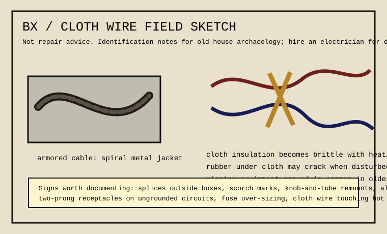

Infrastructure becomes illegible fast. A 1920s cable run, a 1950s repair, and a 1990s “temporary” splice can all share one wall cavity. The useful weirdness is the timeline: materials reveal who touched the building and what problem they thought they were solving.
cross-file: telephone exchange card · barometer card